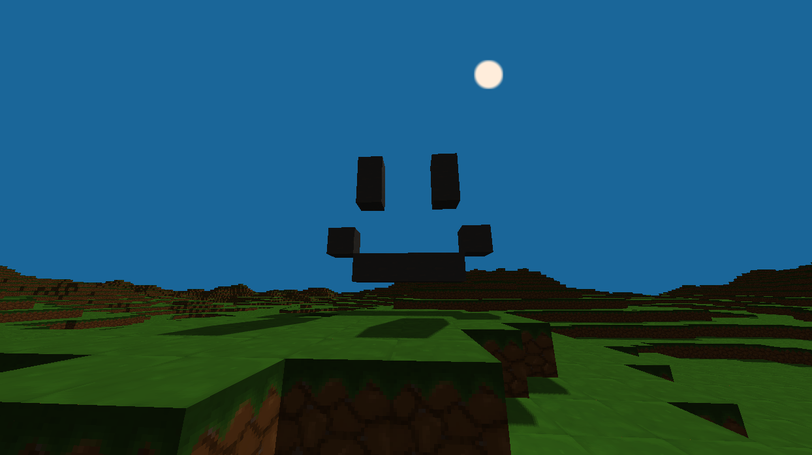

OpenGL voxel engine
Voxel World Prototype
A voxel world built from the ground up to explore procedural generation, real-time lighting, world interaction and collision. My first OpenGL project. I've since gone back and optimised it, and it now runs a 1,000 chunk render distance at around 970 FPS.

- 108 → 836
- average FPS, same 64 chunk distance
- 48 s → 1.5 s
- world load time
- 1,000
- chunk render distance, up from 64
- ~970
- FPS at 1,000 chunks, 1080p
What I built
- Built an infinite procedural world on a chunk-based system.
- Implemented real-time directional sunlight with voxel-cast shadows.
- Created interactive block modification so players can change the terrain.
- Implemented AABB collision for reliable movement through voxel terrain.
- Added greedy meshing and per-vertex ambient occlusion.
- Merged the whole world into one big indirect draw instead of a draw per chunk.
- Split chunks into 16x16x16 pieces so whole regions can be culled at once.
- Added LODs so distant terrain is drawn at lower detail, which let me raise the render distance from 64 to 200 chunks, and later to 1,000 with a separate far-terrain pass.
- Moved world generation and meshing onto background threads.
- Added world saves, so the blocks you change stay changed.
- Wrote a benchmark that flies, spins and edits the world, then logs FPS, frame times and memory to a CSV.
- Same 64 chunk distance, before and after: loading went from 48 s to 1.5 s and average FPS from 108 to 836. At 1,000 chunks it averages around 970 FPS at 1080p on an RX 9060 XT.
My role
A practical exploration of low-level rendering and engine development. Rather than relying on a pre-built world system, I implemented the core systems needed to create and interact with a large voxel environment. Later I went back to see how far I could push performance. I wrote a benchmark first so I could tell whether each change actually helped.
What I learned
C++, OpenGL rendering, procedural systems, spatial organisation and lighting, and the challenges of building engine functionality from scratch. Going back to optimise it taught me to measure first and only keep the changes that make a real difference.
How it works
Measure first
Before optimising anything I wrote a benchmark that loads the world, flies a fixed route, spins on the spot and edits blocks, then appends load time, average FPS, 1% lows, draw calls and memory to a CSV. Every change below was kept or thrown away based on that log, which now holds 74 runs.
One draw instead of thousands
The first benchmark showed 5,839 draw calls a frame at a 64 chunk distance. Chunk meshes now live in a shared pool and the whole world is submitted as a list of indirect draw commands, so the GPU walks the list instead of the CPU issuing a draw per chunk. That one change took the benchmark from 108 to 988 FPS.
Greedy meshing and 16-byte vertices
Neighbouring faces with the same texture and lighting are merged into the largest rectangle possible. Each vertex is packed into 16 bytes, and because a merged quad can be several blocks wide, texture coordinates are stored in blocks and the shader repeats the atlas tile with fract().
Sections and culling
Chunks are split into 16x16x16 sections, which cut block memory in the benchmark from 1,056 MB to 81 MB and lets whole regions be culled at once. Faces are also grouped by the direction they point, so groups facing away from the camera are never sent to the GPU.
LODs and far terrain
Level-of-detail meshes took the 200 chunk benchmark from 129 to 1,353 FPS. A separate far-terrain pass has since pushed the render distance to 1,000 chunks at roughly 970 FPS, with the world loading in about 7 seconds.
Average FPS in the benchmark's spin test at 1080p on an RX 9060 XT, taken from the project's benchmark log.
Code
Short excerpts from the project. Every line shown is mine.
// 2. Greedy merge: grow each unclaimed cell into the biggest rectangle of identical cells
for (int b = 0; b < size[v]; b++) {
for (int a = 0; a < size[u];) {
uint32_t cell = mask[a + b * size[u]];
if (cell == 0) { a++; continue; }
// Grow along u while the cells match
int width = 1;
while (a + width < size[u] && mask[a + width + b * size[u]] == cell) {
width++;
}
// Grow along v while every cell in the next row matches
int height = 1;
bool rowMatches = true;
while (b + height < size[v] && rowMatches) {
for (int k = 0; k < width; k++) {
if (mask[a + k + (b + height) * size[u]] != cell) { rowMatches = false; break; }
}
if (rowMatches) height++;
}
// Faces pointing + sit on the far side of the block
glm::ivec3 origin(0);
origin[axis] = slice + (direction > 0 ? 1 : 0);
origin[u] = a;
origin[v] = b;
addQuad(mesh, origin * scale, uStep * (width * scale), vStep * (height * scale), direction, face, cell);
// Claim the cells so they aren't used again
for (int h = 0; h < height; h++) {
for (int k = 0; k < width; k++) {
mask[a + k + (b + h) * size[u]] = 0;
}
}
a += width;
}
}Each cell of the mask encodes texture and ambient occlusion in one integer, so 'can these faces merge?' is a single comparison.
for (const VisibleSection& entry : visibleSections) {
// A face pointing +X can only be seen from its +X side. Every +X face in this mesh is at or past min.x,
// so with the viewer at or before min.x none of them can be: the whole group is skipped
// From the sun every face in a group points the same way relative to it, so it's all or nothing
bool visible[faceGroupCount];
if (viewPoint) {
visible[NegXFaces] = viewPoint->x < entry.max.x;
visible[PosXFaces] = viewPoint->x > entry.min.x;
visible[NegZFaces] = viewPoint->z < entry.max.y;
visible[PosZFaces] = viewPoint->z > entry.min.y;
}
else {
visible[NegXFaces] = viewDirection.x > 0.0f;//a -X face faces the viewer when the viewer looks along +X
visible[PosXFaces] = viewDirection.x < 0.0f;
visible[NegZFaces] = viewDirection.z > 0.0f;
visible[PosZFaces] = viewDirection.z < 0.0f;
}
visible[VerticalFaces] = true;
// ...
GLsizei count = mesh.groupCounts[g];
if (count == 0) continue;
if (visible[g]) {
if (runLength == 0) runStart = groupStart;
runLength += gap + count;//the hidden groups in between come along
gap = 0;
}
else if (runLength > 0 && gap + count < splitAtLeast) {
gap += count;//maybe drawn, if another visible group follows
}
else {
addRun();//too much hidden in between, split
gap = 0;
}
groupStart += count;
}
addRun();//a hidden gap at the end is just left off
}A small hidden group between two visible ones is drawn anyway. A draw call costs about as much as 400 triangles, so splitting around fewer than that would make things slower.
In motion
Play it
Like what you see?
I'm looking for my first games industry role as a gameplay or AI programmer. Studios of any size welcome.